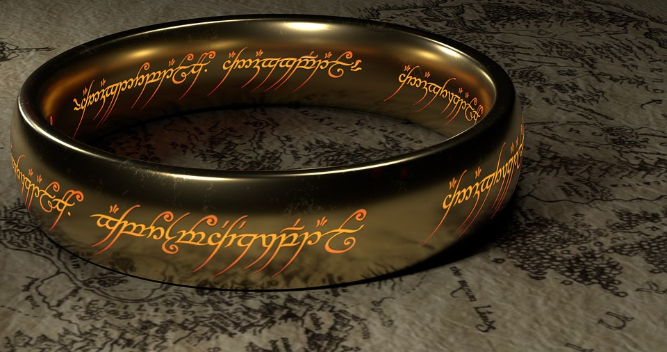

Bienvenidos a esta página web que pretende reunir la última información de nuestros autores de novela fantástica favoritos, así como comentar los últimos libros publicados y resumir todas las últimas noticias
Autor del mes
J.R.R Tolkien
Descubre los mejores autores de novela fantástica
NoticiasÚltimas novedades de tus historias y autores favoritos
Formulario¿Tienes dudas o recomendaciones? Déjanos también tu opinión